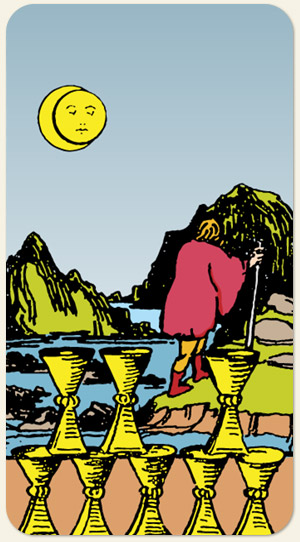

Abundância de sentimentos, pode fazer com que se crie costume e leve à busca de um sentimento verdadeiro. Entender que a felicidade não é um instante e sim uma vida inteira. Amor direcionado a todos os lados da existência. Na imagem: um homem caminha sozinho pela noite escura com um cajado na mão.
Positivo: Reconhecer que coisas não fazem mais sentido, buscar referências no passado para que a gente melhore nossas escolhas no futuro, entender que a felicidade é uma construção diária, retirar-se da vida comum para viver uma vida mais completa, buscar o sentido da vida, buscar o que traz aconselhamento para o coração, entender que a felicidade não est fora.
Negativo: Não encarar seus medos, procurar alegria em futilidades, estar sedento por afeto, estar rodeado de pessoas e se sentir sozinho, retirar-se da celebração, não se sentir parte de um grupo, pessoas que andam errantes e vagando por causa de vícios, usar muletas para amortecer suas dores.
Símbolos:
Cores: Cor, Cor, Cor.